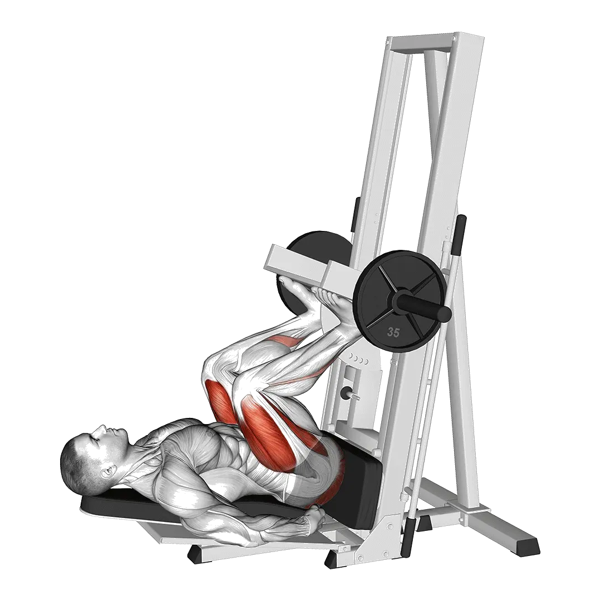

Vertical Leg Press
Vertical Leg Press shows average weight and strength standards as a reference for legs. Primary muscles: Quadriceps.

Average weight: Intermediate
Reference for an intermediate lifter.
Men
484 lb
Women
316 lb
Vertical Leg Press: Average weight [1RM]
| Level | ||
|---|---|---|
| Beginner | 178 lb | 98 lb |
| Novice | 309 lb | 189 lb |
| Intermediate | 484 lb | 316 lb |
| Advanced | 699 lb | 475 lb |
| Elite | 941 lb | 658 lb |
Note: These standards are 1RM estimates based on average lifters. Bodyweight, age, and other personal factors can affect the values. See the detailed tables below.
Vertical Leg Press: Strength standards (lb)
Men by bodyweight (lb) [1RM]
| Bodyweight | Beginner | Novice | Intermediate | Advanced | Elite |
|---|---|---|---|---|---|
| 110 | 81 | 165 | 285 | 437 | 611 |
| 120 | 99 | 190 | 317 | 477 | 659 |
| 130 | 117 | 215 | 349 | 515 | 704 |
| 140 | 135 | 239 | 380 | 552 | 747 |
| 150 | 153 | 263 | 409 | 588 | 789 |
| 160 | 171 | 286 | 438 | 622 | 828 |
| 170 | 189 | 309 | 466 | 656 | 867 |
| 180 | 206 | 331 | 493 | 688 | 903 |
| 190 | 223 | 352 | 519 | 719 | 939 |
| 200 | 240 | 374 | 545 | 749 | 973 |
| 210 | 257 | 394 | 570 | 778 | 1007 |
| 220 | 273 | 415 | 594 | 806 | 1039 |
| 230 | 289 | 434 | 618 | 834 | 1070 |
| 240 | 305 | 454 | 641 | 861 | 1100 |
| 250 | 321 | 473 | 664 | 887 | 1130 |
| 260 | 336 | 491 | 686 | 912 | 1159 |
| 270 | 351 | 510 | 707 | 937 | 1186 |
| 280 | 366 | 528 | 728 | 961 | 1214 |
| 290 | 381 | 545 | 749 | 985 | 1240 |
| 300 | 395 | 562 | 769 | 1008 | 1266 |
| 310 | 410 | 579 | 789 | 1031 | 1292 |
Men by age [1RM]
| Age | Beginner | Novice | Intermediate | Advanced | Elite |
|---|---|---|---|---|---|
| 15 | 152 | 263 | 412 | 595 | 801 |
| 20 | 173 | 301 | 472 | 681 | 917 |
| 25 | 178 | 309 | 484 | 699 | 941 |
| 30 | 178 | 309 | 484 | 699 | 941 |
| 35 | 178 | 309 | 484 | 699 | 941 |
| 40 | 178 | 309 | 484 | 699 | 941 |
| 45 | 169 | 293 | 459 | 663 | 893 |
| 50 | 159 | 275 | 431 | 623 | 838 |
| 55 | 147 | 254 | 399 | 576 | 775 |
| 60 | 134 | 232 | 364 | 526 | 707 |
| 65 | 121 | 210 | 329 | 475 | 639 |
| 70 | 108 | 188 | 295 | 426 | 573 |
| 75 | 97 | 168 | 264 | 381 | 513 |
| 80 | 87 | 150 | 236 | 341 | 458 |
| 85 | 78 | 135 | 212 | 305 | 411 |
| 90 | 70 | 122 | 191 | 275 | 370 |
Women by bodyweight (lb) [1RM]
| Bodyweight | Beginner | Novice | Intermediate | Advanced | Elite |
|---|---|---|---|---|---|
| 90 | 56 | 126 | 228 | 361 | 516 |
| 100 | 65 | 139 | 246 | 383 | 543 |
| 110 | 74 | 151 | 262 | 404 | 567 |
| 120 | 82 | 163 | 278 | 423 | 589 |
| 130 | 90 | 174 | 292 | 441 | 610 |
| 140 | 98 | 185 | 306 | 457 | 630 |
| 150 | 105 | 195 | 319 | 474 | 649 |
| 160 | 112 | 205 | 332 | 489 | 667 |
| 170 | 119 | 214 | 344 | 503 | 684 |
| 180 | 126 | 224 | 355 | 517 | 700 |
| 190 | 133 | 232 | 366 | 531 | 716 |
| 200 | 139 | 241 | 377 | 543 | 730 |
| 210 | 146 | 249 | 387 | 556 | 745 |
| 220 | 152 | 257 | 397 | 568 | 758 |
| 230 | 158 | 265 | 407 | 579 | 772 |
| 240 | 163 | 272 | 416 | 590 | 784 |
| 250 | 169 | 280 | 425 | 601 | 797 |
| 260 | 175 | 287 | 434 | 611 | 809 |
Women by age [1RM]
| Age | Beginner | Novice | Intermediate | Advanced | Elite |
|---|---|---|---|---|---|
| 15 | 83 | 161 | 269 | 405 | 560 |
| 20 | 95 | 184 | 308 | 463 | 641 |
| 25 | 98 | 189 | 316 | 475 | 658 |
| 30 | 98 | 189 | 316 | 475 | 658 |
| 35 | 98 | 189 | 316 | 475 | 658 |
| 40 | 98 | 189 | 316 | 475 | 658 |
| 45 | 93 | 179 | 300 | 451 | 624 |
| 50 | 87 | 168 | 281 | 423 | 586 |
| 55 | 81 | 155 | 260 | 391 | 542 |
| 60 | 74 | 142 | 237 | 357 | 494 |
| 65 | 66 | 128 | 214 | 323 | 447 |
| 70 | 60 | 115 | 192 | 290 | 401 |
| 75 | 53 | 103 | 172 | 259 | 358 |
| 80 | 48 | 92 | 154 | 232 | 320 |
| 85 | 43 | 82 | 138 | 208 | 287 |
| 90 | 39 | 74 | 124 | 187 | 259 |
Note: A standard gym barbell usually weighs 44 lb.
Track and analyze in the Shiba app
Review weight, reps, and progress in one place.
How to read the table
| Level | Description | Distribution |
|---|---|---|
| Beginner | Has learned proper form and trained consistently for at least 1 month. | Bottom 5% |
| Novice | Has trained consistently for at least 6 months. | Top 80% |
| Intermediate | Has trained consistently for at least 2 years. | Top 50% |
| Advanced | Has trained consistently for more than 5 years. | Top 20% |
| Elite | Has specialized in this exercise for more than 5 years. | Top 5% |